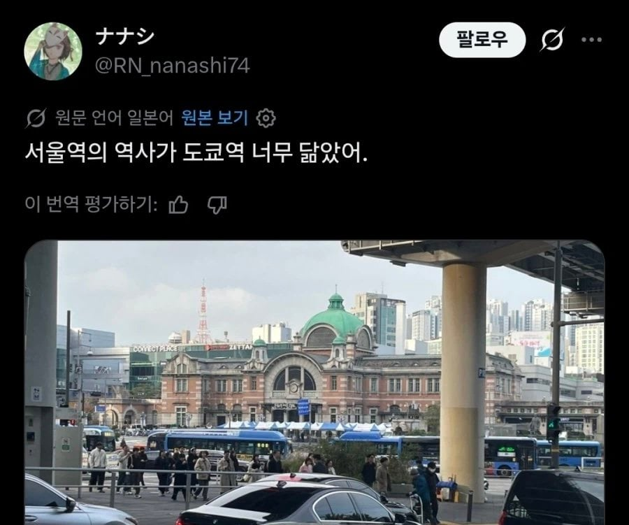

치트키 쓰지마라

치트키 쓰지마라
쟤네는 역사공부를 파칭코로 배우냐
(제대로 된)역사 공부를 안하지
헤이헤이헤이
신세계 본점도 보여줘라.
차이점은 서울역은 밖으로 나오면 한숨만 나오는데 도쿄역은 감탄만나옴
철도에 진심이고 역에 의미부여하는 나라와 철도에 크게 투자도 안하고 그닥 의미부여 안하는나라. 자동차문화와 철도문화의 대표적인 차이.
철스퍼거 원천차단
우리는 자동차문화도 아니고 철도문화도 아니고
place, seoul 🤮
place, tokyo 😍
노숙자문제에 대해서는 이것에 공감
ㄹㅇ서울역은 나가자마자 보이는게 노숙자와 예수쟁이들인게 참...
디스토피아 세계관이네 ㅋㅋㅋㅋㅋㅋㅋ
저게 만약 어디 궁궐 가렸으면...
100년전에 너희 선조들이...
왜겠어?
거기 앉아봐라 개쩌는 이야기를 들려줄테니
그건 말이지...
엄....

이렇게 부숴달라 콜을 하는구나?
잘 하면 스택 쌓인다ㅋㅋ
너 눈이 좋구나
근데 저거 진심 왜 유지함? 일제잔재인데
한국에서 일본이 스위스 루체른역 카피를 만들어버린...
각 나오면 부술듯
뭐 예뻐요 이상의 온갖 핑계들 많겠지. 하지만
저거 갖고 반복적으로 일제강점기 옹호발언 불지피고 이슈되면 그땐..ㅋㅋ
저거는 이제 역으로서의 기능은 끝났고 걍 문화재 비슷한거임 저기 그 철도역사랑 일제시대 역사들 이런거 전시한다고 들었는데..
내가 틀딱인데도 구역사 이용해본적 없음 지금이랑 똑같은 신역사만 사용해봄
그리고 혹시 알라나 모르겠는데 김영삼때 실제로 일본 조선총독부 건물 부셔버린적 있긴 함 ㅋㅋㅋ
일본놈들 버르장머리를 고쳐준다면서 ㅋㅋ 그래서 일본에서 '보르장모리가 무엇이무니까??' 이런 얘기 많이 나왔었음 당시에.
조선총독부 위치가 아주 좆같았는데 일본놈들이 풍수지리학적으로 한민족의 정기를 뺏는다는 자리에 지었다 해야되나
경복궁 청와대 다 쳐 가리는 위치에 일부러 거대하게 지어놔가지고 미운털 박혀서 걍 부셔버린 것도 있음
서울역은 그정도는 아니라 걍 냅두는거긴 한데 앞으로 반일감정이 그당시보다 더 커질일은 없을거같고 걍 부수는것보다 일본놈들이 이렇게 나쁜짓을 했어요 하고 전시관으로 냅두는게 더 나아보이긴 함
“앞으로 반일감정이 그당시보다 더 커질일은 없을거같고”
ㅎㅎㅋㅋ
조선총독부 건물을 국립중앙박물관으로 쓰고 있었던 것도 어처구니 없었지 멋진 건물이긴 했는데 폭파해버린건 정말 잘한거 같아 진짜 위치가 존나 좆 같았어
아이고야 설명수고했고 잘가라
븅신인가 이새낀 대놓고 ㅇㄱㄸ를 지르네
당연하지 씨밯련아

니가 먼저 시작했다???
내선일체ㅋㅋ
씨발년이
어..
엄ㅋㅋㅋ
알면서 가지고 노는거지? 저자슥?
그야 진짜 도쿄역 건축가의 제자가 설계했으니깐! (대충펀쿨끄덕짤)
어...